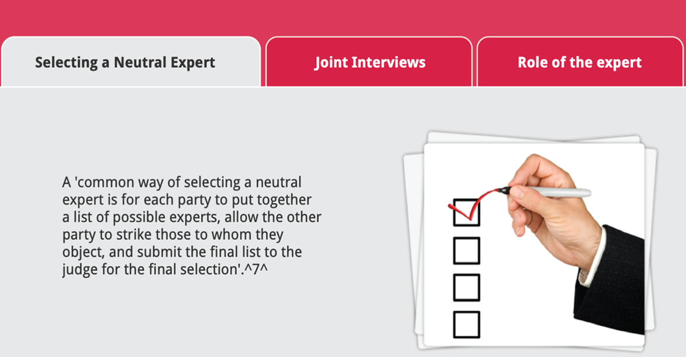
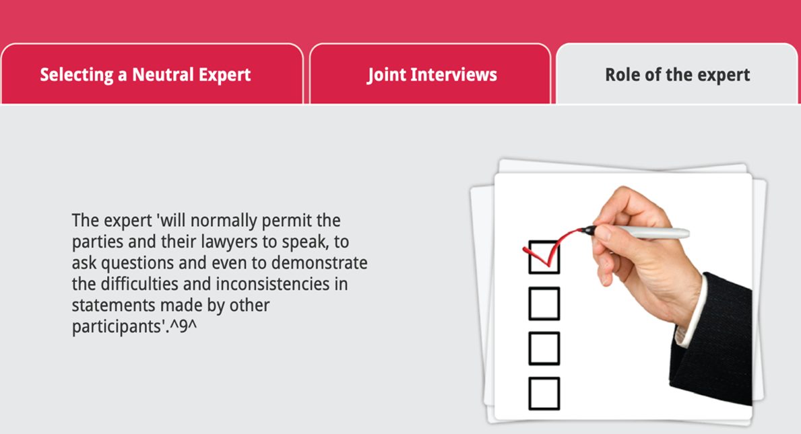
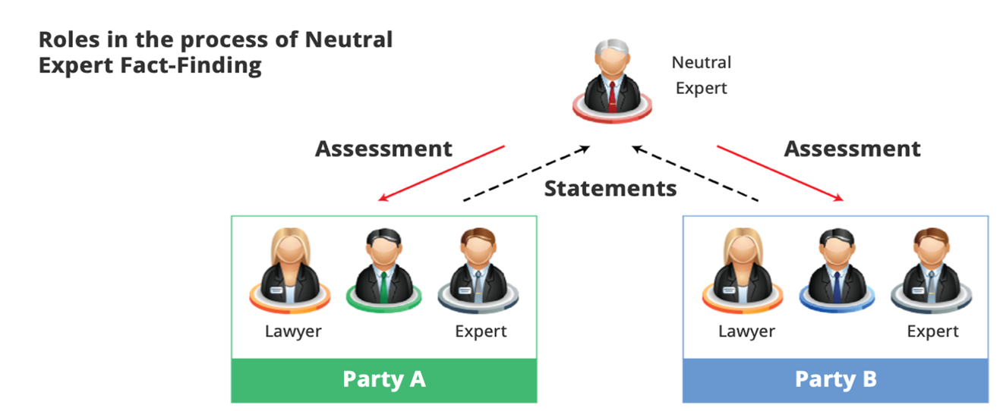

Neutral Expert Fact-Finding 中立专家事实调查
Questions: select the answer you consider to be correct.
Q1:Which of the following disputes is most likely to be resolved by NEFF? 下列哪项争议最有可能由中立专家事实调查（NEFF）解决？
A.highly personal dispute where each party is very entrenched in their position. 一场高度个人化的纠纷，双方都非常坚持自己的立场
B.A highly technical dispute where each party’s expert disagrees on the facts. 双方专家对事实持有不同意见的高度技术性的争议
C.A complex legal dispute which requires a neutral with significant legal experience. 复杂的法律纠纷，需要具有丰富法律经验的中立方
D.A dispute between a business and a consumer where there is unequal bargaining power.
A1:The correct answer is B. (正确答案：B)
NEFF ‘is based on the problem that arises […] when each side has an expert holding firmly to a view that is diametrically opposed to that of the opponent’s expert […] The idea behind NEFF is for the neutral to re-evaluate the technical evidence and encourage the parties to look critically at their own expert’s assessment’. “基于问题产生[…], 即双方都有一名专家坚定地持有与对方专家截然相反的观点时[…] NEFF背后的理念是让中立方重新评估技术证据，并鼓励双方批判性地看待自己自己专家的评估”。
Q2:Which of the following statements best describes NEFF? 下列哪个陈述最好地描述了中立专家事实调查？
A.A neutral third party reviews the case and submits a report that identifies those facts which are in dispute. 中立的第三方审查案件，并提交一份报告，确定有争议的事实
B.A neutral third party helps to facilitate dialogue between the parties and serves as a catalyst for successful negotiation. 中立的第三方有助于促进双方之间的对话，并作为成功谈判的催化剂
C.A neutral third party hears questions of fact or law and issues a binding decision on the parties. 中立的第三方听取事实或法律问题，并对当事人作出有约束力的决定
D.A neutral third party offers an informed opinion on the merits each party’s legal position. 中立的第三方就双方法律立场的是非曲直提供知情意见。
A2:the correct answer is A
Neutral Expert Fact-Finding (NEFF) is 'an informal process in which a neutral third party [...] reviews the case and submits a report that identifies those facts which are in dispute'. By involving 'an investigation and report of what the facts [...] must have been in the view of an independent third party' the 'inquiry of a neutral fact-finder can provide [an] objective evaluation necessary to negotiate a settlement or give a binding, semi-binding or non-binding assessment of certain factual issues'. 中立专家事实调查（NEFF）是“一个非正式的过程，由中立的第三方审查案件，并提交一份报告，确定有争议的事实。”通过参与到“一份独立第三方对事实（…）的调查和报告，中立事实调查员的调查可以提供谈判解决所必需的客观评估，或对某些事实问题给出具有约束力，半约束力或非约束力的评估”。
Q3:In what contexts has NEFF proved most useful?
A.Public sector collective bargaining problems. 公共部门集体协商问题
B.Complex scientific and technical issues. 复杂的科学和技术问题
C.Complex business or economic issues. 复杂的商业或经济问题
D.All of these. 以上都是
A3: the correct answer is D.
NEFF is perhaps most useful 'in reporting public sector collective bargaining problems and complex scientific, technical, business or economic issues where the presentation or proof of such issues is extremely difficult, expensive, and time-consuming'. NEFF可能在“报告公共部门集体协商问题和复杂的科学、技术、商业或经济问题时最有用，因为这些问题的提出或证明极其困难、昂贵和耗时”。
Congratulations!
You have achieved a basic understanding of the Neutral Expert Fact-Finding process. 你已经对中立专家事实调查过程有了基本的了解。
You have learned the following: 你学到了以下内容：
[1]Neutral Expert Fact-Finding (NEFF) is an informal process in which a neutral third party reviews the case and submits a report that identifies the facts in dispute. 中立专家事实调查（NEFF）是一个非正式的过程，由中立的第三方审查案件，并提交一份报告，确定有争议的事实。
[2]NEFF is based on the problem that arises when each side has an expert holding firmly to a view that is diametrically opposed to that of the opponent’s expert. 中立专家事实调查（NEFF）基于问题产生，即双方都有一名专家坚定地持有与对方专家截然相反的观点
[3]NEFF is useful in reasoning public sector collective bargaining problems and complex scientific, technical, business or economic issues. 中立专家事实调查（NEFF）在公共部门集体协商问题和复杂的科学，技术，商业或经济问题的推理中很有用
[4]NEFF can arise either through appointment by the court or by agreement between the parties. 中立专家事实调查（NEFF）既可以通过法院的任命产生，也可以通过双方的协议产生
What is the aim of this module?
Understanding how the process of Neutral Expert Fact-Finding works and what the outcomes of this mechanism are. 了解中立专家事实调查的过程是如何工作的，以及这种机制的结果是什么。
Neutral Expert Fact-Finding (NEFF) is ‘an informal process in which a neutral third party […] reviews the case and submits a report that identifies those facts which are in dispute.’ 中立专家事实调查（NEFF）是“一个非正式的过程，由中立的第三方审查案件，并提交一份报告，确定有争议的事实。”
By involving‘an investigation and report of what the facts […] must have been in the view of an independent third party, the inquiry of a neutral fact-finder can provide an objective evaluation necessary to negotiate a settlement or give a binding, semi-binding or non-binding assessment of certain factual issues’. 通过参与到“一份独立第三方对事实（…）的调查和报告，中立事实调查员的调查可以提供谈判解决所必需的客观评估，或对某些事实问题给出具有约束力，半约束力或非约束力的评估”。
Neutral Expert Fact-Finding (NEFF) ‘is based on the problem that arises […] when each side has an expert holding firmly to a view that is diametrically opposed to that of the opponent’s expert’.中立专家事实调查 （NEFF）“基于问题产生[…], 即双方都有一名专家坚定地持有与对方专家截然相反的观点”。
Neutral Expert Fact-Finding（NEFF） can arise either through appointment by the court […] or by agreement between the parties […]. The idea behind NEFF is for the neutral to re-evaluate the technical evidence and encourage the parties to look critically at their own expert’s assessment’. 中立专家事实调查（NEFF）既可以通过法院[…]的任命产生，也可以通过双方[…]的协议产生。中立专家事实调查（NEFF）背后的想法是让中立的人重新评估技术证据，并鼓励各方批评性地看待他们自己的专家评估。
Unlike other forms of dispute resolution, NEFF ‘usually requires appraisal of data and analysis of information outside the scope of most people’s everyday experience. Indeed, in many cases the dispute turns on an issue that only a person with highly specialized and advanced training or experience can understand […]’ 与其他形式的争议解决不同，中立专家事实调查(NEFF)“通常需要对大多数人日常经验范围之外的数据和信息进行评估和分析。事实上，在很多情况下，争论的焦点是一个只有经过高度专业化和高级培训或经验的人才能理解的问题[…]”。
The neutral expert can promote accurate fact-finding by providing an objective and impartial assessment of the facts, often from a person of higher caliber than is available on a partisan basis to the parties. 中立的专家可以通过对事实提供客观公正的评估来促进准确的事实调查，通常是来自一个比党派人士更有才干的人。
Selecting a Neutral Expert: 选择中立专家
A ‘common way of selecting a neutral expert is for each party to put together a list of possible experts, allow the other party to strike those to whom they object, and submit the final list to the judge for the final selection’. “选择中立专家的一种常见方式是，双方各自列出可能的专家名单，让对方打击他们反对的人，并将最终名单提交给法官进行最终选择”。
Joint Interviews: 联合采访
After the selection of an expert, each party then ‘identifies the persons, the dispute, and the fact-finder conducts joint interviews with these individuals. Parties are expected to cooperate fully during the interview process, and the fact-finder is given access to all relevant information and documents.’ 在选择了专家之后，每一方都要确定人，争议，并且事实调查人对这些人进行联合采访。 当事人应当在面谈过程中充分合作，事实调查人有权查阅所有相关信息和文件。
Role of the expert: 专家的角色
The expert ‘will normally permit the parties and their lawyers to speak, to ask questions and even to demonstrate the difficulties and inconsistencies in statements made by other participants’. 专家“通常会允许当事人和他们的律师发言，提出问题，甚至展示其他参与者陈述中的困难和不同之处”。
NEFF is perhaps most useful ‘in reporting public sector collective bargaining problems and complex scientific, technical, business or economic issues where the presentation or proof of such issues is extremely difficult, expensive, and time-consuming’. 中立专家事实调查可能在“报告公共部门集体协商问题和复杂的科学，技术，商业或经济问题时最有用，因为这些问题的提出或证明极其困难，昂贵和耗时”。
NEFF is a process in which a neutral third party reviews the case and identifies those facts which are in dispute. The process takes place after each party has identified the people who have information concerning the dispute and the fact-finder conducts joint interviews with them. The expert will normally permit the parties and their lawyers to speak, to ask questions and even to demonstrate the difficulties and inconsistencies in statements made by other participants. 中立专家事实调查是一个由中立的第三方审查案件并确定有争议的事实的过程。这一过程发生在双方确定了掌握有关争议信息的人，并且事实调查员对他们进行联合采访之后。专家通常允许当事各方及其律师发言，提问，甚至展示其他参与者陈述中的困难和不同之处。